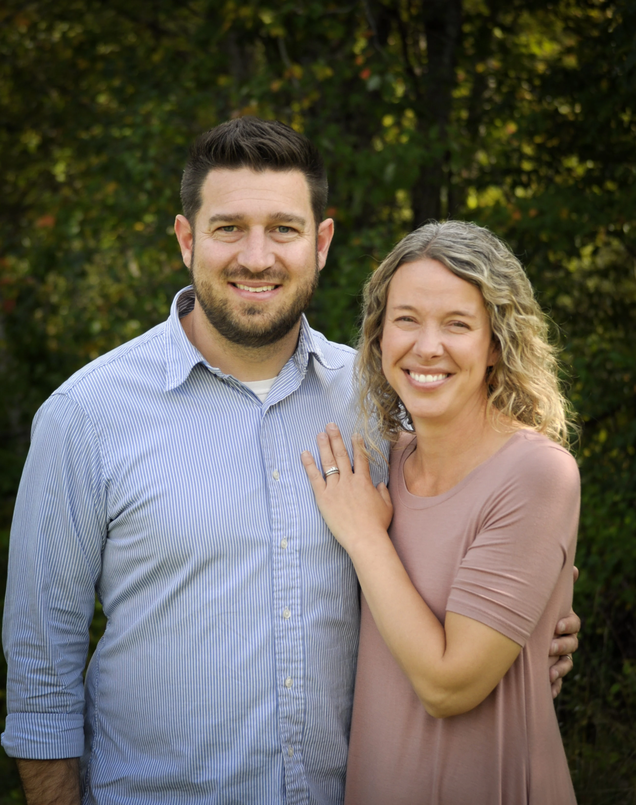
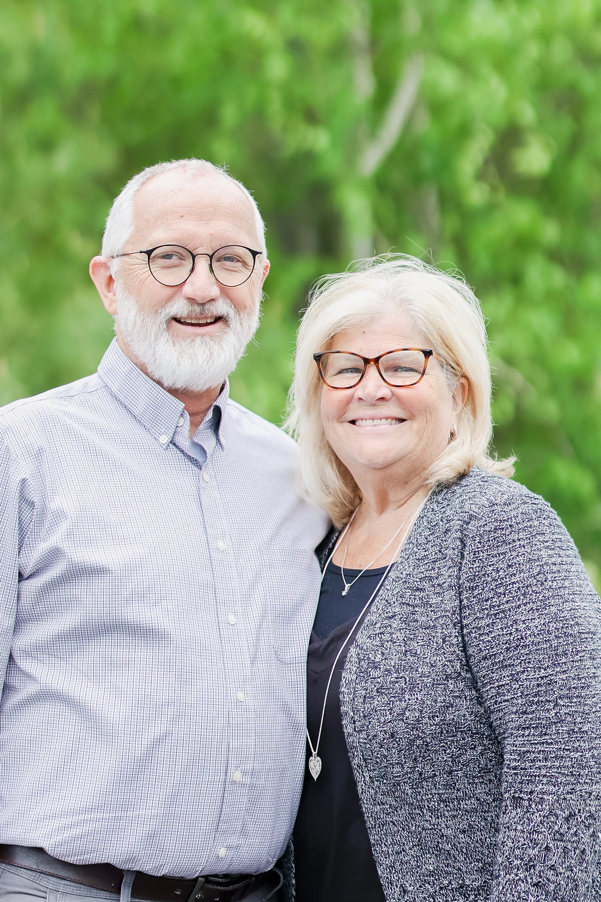
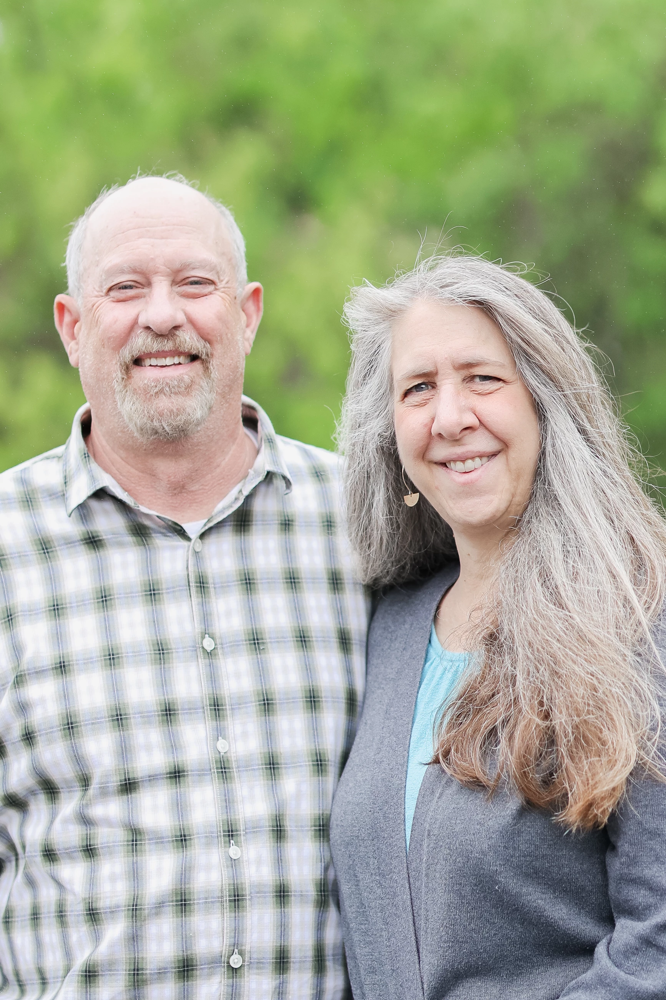
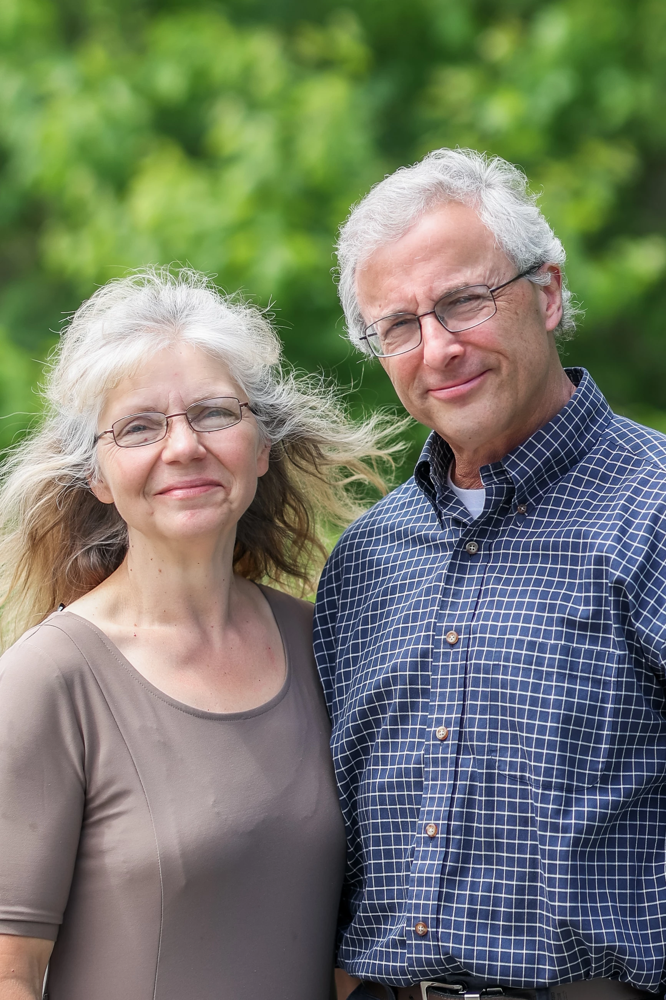
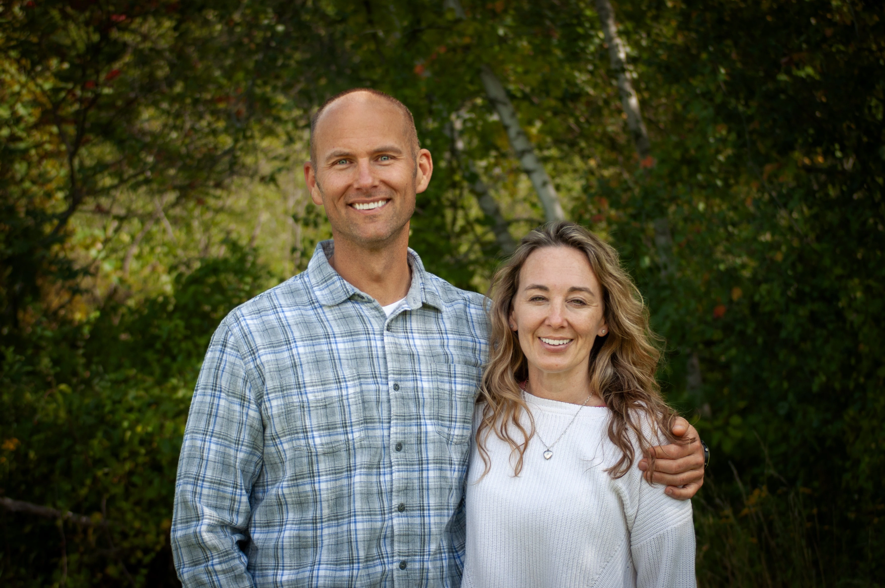
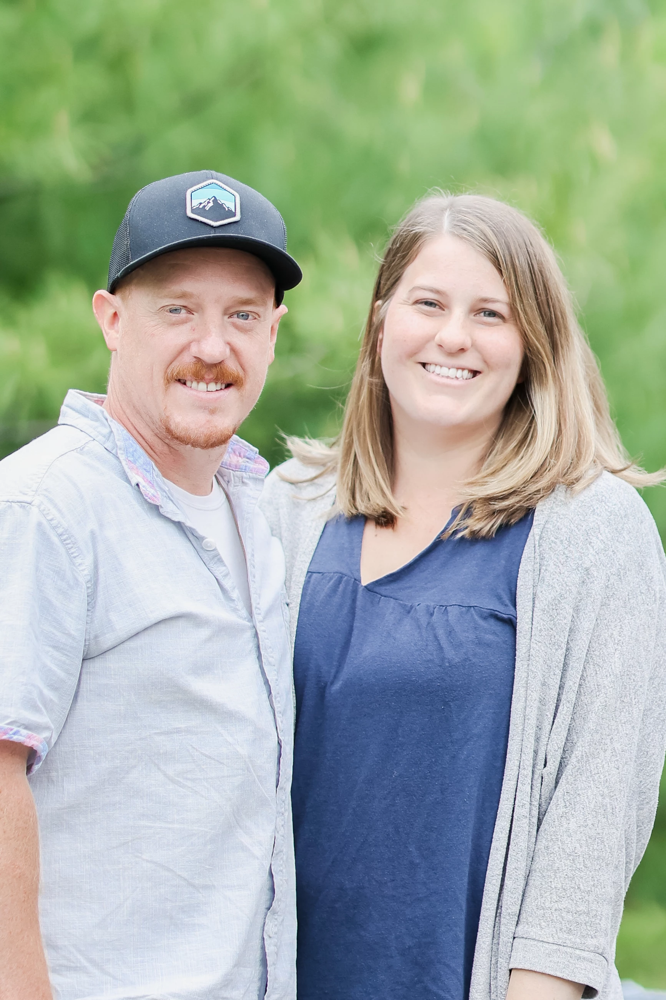
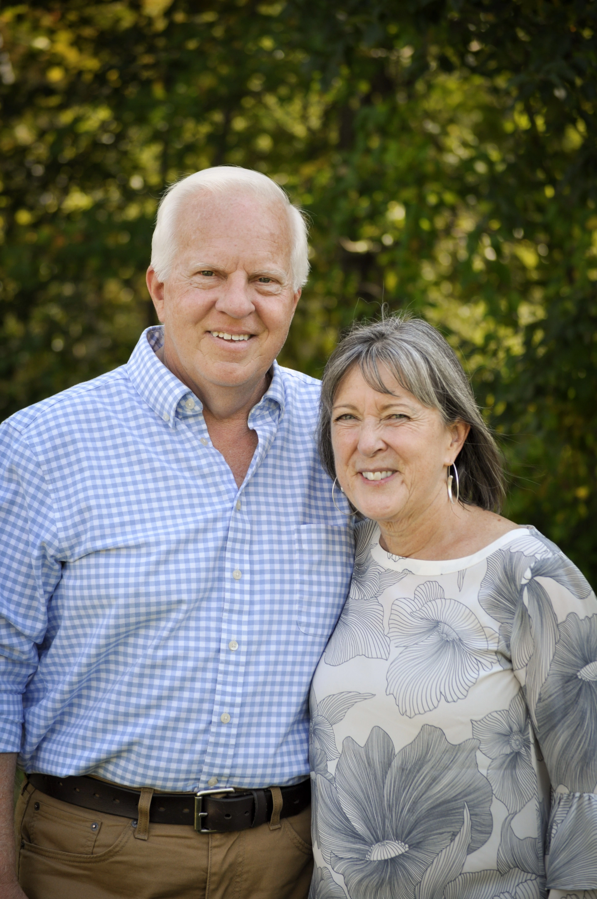
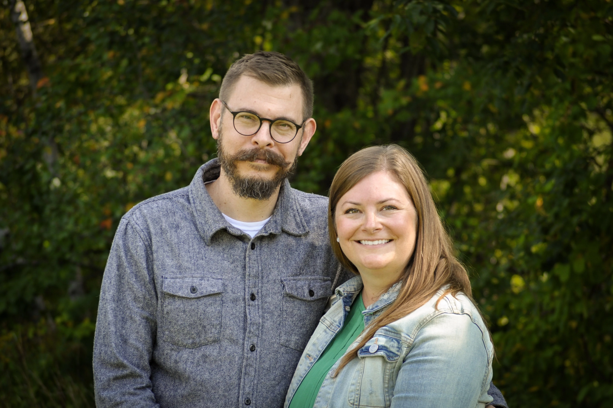
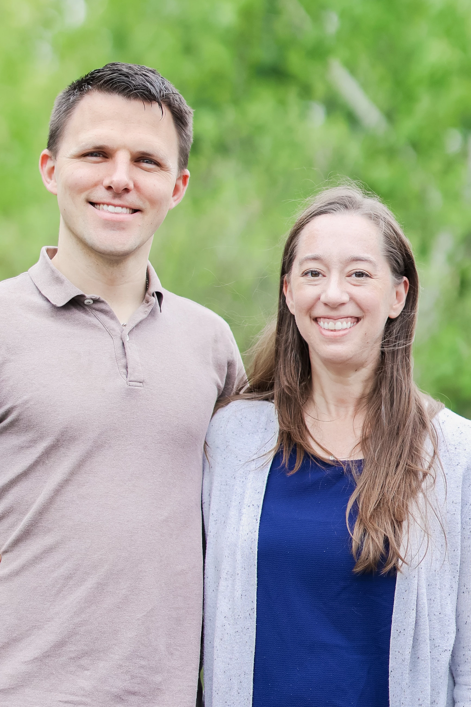

Peter LeDuc
Lead Pastor
Peter grew up in NH in a big, blended family and graduated from Coe Brown Northwood Academy in 2005. Family life revolved around their church, Christian school, and family business. Being saturated with the Gospel daily, Peter came to know Jesus early in his life and has been actively involved in ministry since his teen years. He and his wife Laura met during high school at a winter camp in 2004, and they were married in 2008. With five children, life at home is never boring.

Tim Howard
Tim moved back to Dover from CA in 2022 to help plant Grace Church of Dover. He and Sue have been married since 1978. They have five children and twelve grandchildren. Tim formerly served as an associate pastor and elder at our sending church Grace Church Simi Valley. Tim holds an MA in Christian Ministries from Grace Theological Seminary and an MA in Biblical Counseling from The Master's University. He is a biblical counselor trained by The Association of Certified Biblical Counselors (ACBC). Tim and Sue enjoy counseling and travelling together.

Mike LeDuc
Mike came to know Christ at 17. He has been widowed twice and married Joy in 2022, a widowed pastor's wife herself. They reside in Rochester and together they have 12 children and 20 grandchildren. Mike has owned and operated his painting business for 40 years. He holds an MA in Biblical Counseling from The Master's University and is a trained biblical counselor with the Association of Certified Biblical Counselors (ACBC). Mike and Joy love early mornings together, laughing, and traveling to visit family.

Randy Glines
Randy came to faith in Christ at 19 years of age. He lives in Berwick, ME with his wife Misty. They have been married since 1983 and have been blessed with nine children and seven grandchildren. Randy is employed as a Senior Credit Analyst in the promotional products industry. He holds an MA in Pastoral Ministry from Trinity Seminary in Indiana. Randy and Misty enjoy walking, gardening, home projects and spending time with their grandkids.

Patrick Brown
Patrick grew up in Milford, NH. He met his wife, Meghan, in high school and shortly after joined the Coast Guard. They have traveled around the country and have lived in numerous locations with their three boys who are now grown and married. They are blessed with five grandchildren. Patrick's life and ministry are the result of many local churches and ordinary people who have invested in him, and he desires to serve others in similar ways. Although he has no formal education, he considers himself a student of God's Word who desires to know Him and make Him known.

Jack Bonneville
Director of Worship
Jack moved to NH in 2022 to help with the church plant. He and his wife, Jessalyn, reside in Barrington. They have been married since 2012 and have two boys. Jack formerly served in the Marine Reserves and currently works as a Swiss CNC machine operator. He and Jessalyn are great at connecting with and caring for others. And they enjoy small family adventures with their boys.

Bill Taylor
Director of Finance
Bill was born and raised in Barrington, NH and came to know Christ at age 18. He currently resides in Madbury with his wife, Renada. Together, they have three adult children and six grandchildren. He has always worked in the family egg business and has been the CEO and CFO of Taylor Egg Products Inc. for over 40 years until he recently turned the business over to his sons, although he is still involved. Bill and Renada enjoy their daily walks, living near the grandchildren, relaxing at the lake, and keeping in touch with the missionaries they support.

Steve Hay
Steve grew up in Maine and currently lives in his hometown of South Berwick. He and his wife, Renee, have been married since 2007 and have two children, Claira and Silas. Steve holds a Bachelor of Science in Nursing and is employed at Dartmouth Hitchcock Medical Center. Together, they enjoy reading, gardening, ministering to the youth of Grace Church, and spending time with family and friends.

Eric Rollins
Eric grew up in Maine and currently lives in Berwick. He and his wife Sara have been married since 2017 and have one son and one daughter. Eric is a software engineer and holds an MS in computer science from Georgia Tech. They enjoy getting outdoors with their kids and exploring the area. They also to enjoy travelling, trying new foods, and doing house projects together. Eric enjoys running whenever he gets the chance.